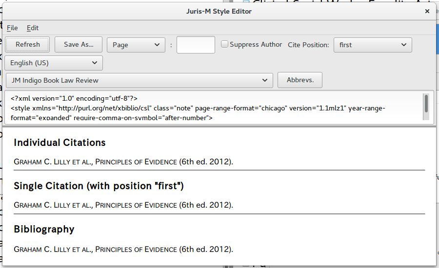
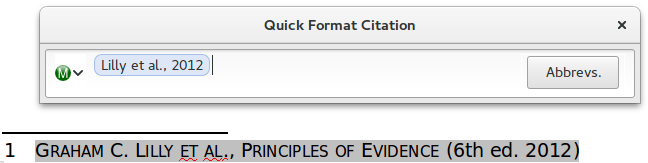
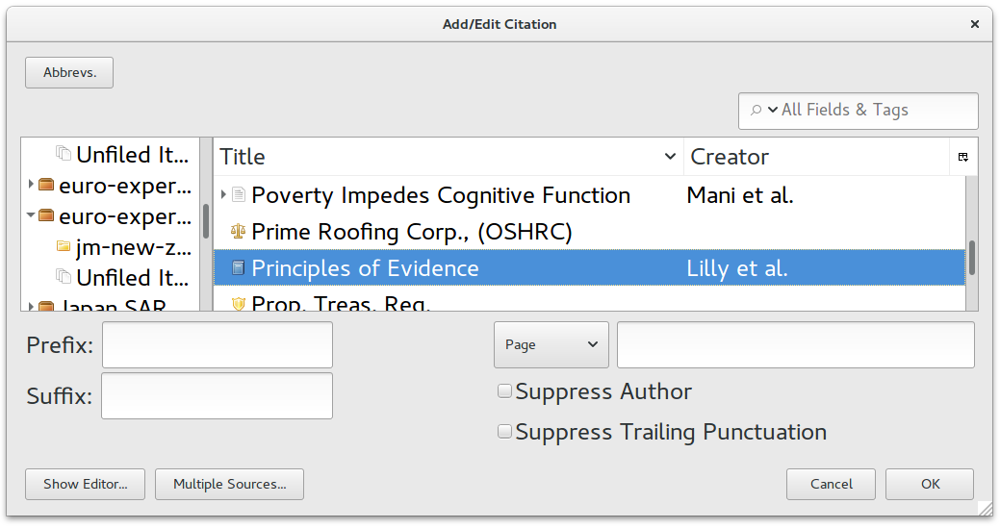
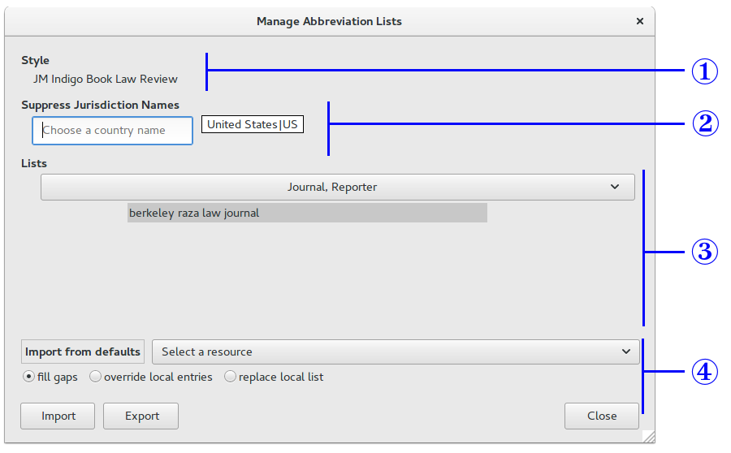
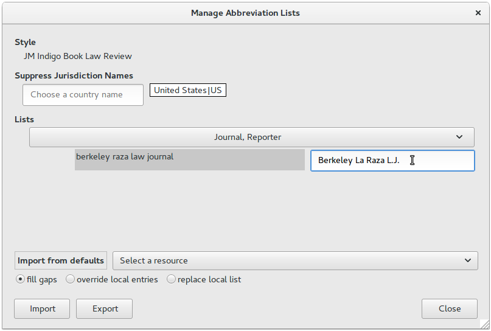
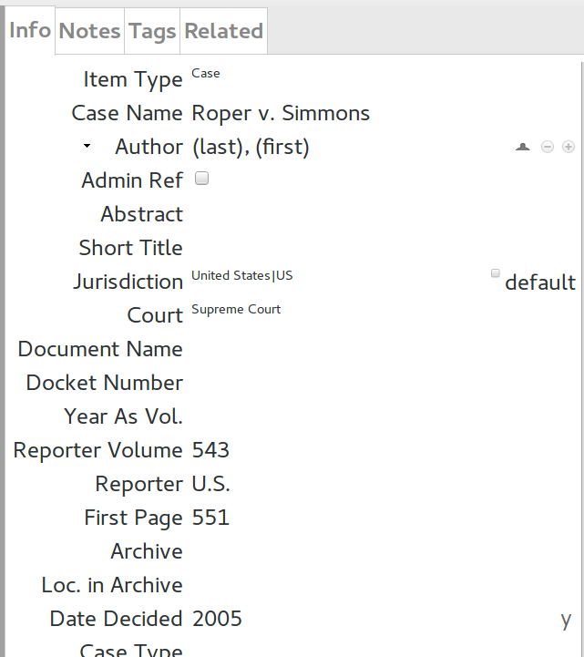
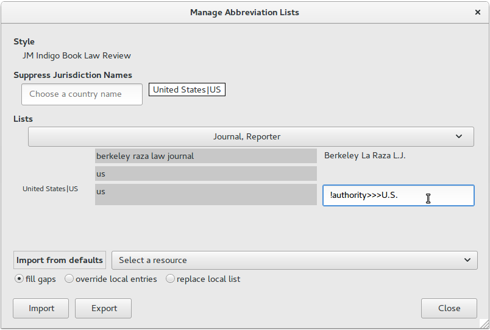
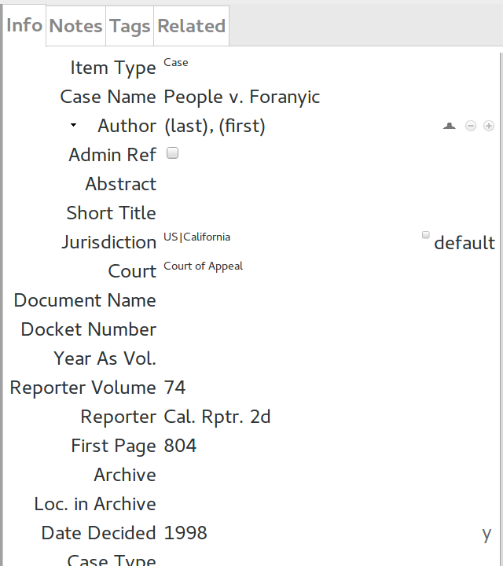
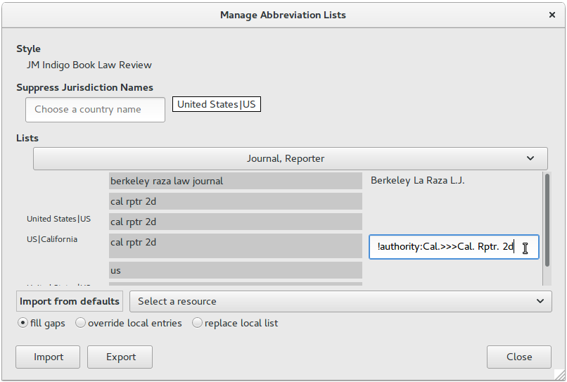

Abbreviations in Jurism
Abbreviations in Jurism
${toc}
🔗 Introduction
Jurism has a built-in abbreviation database that performs many operations automatically, but also enables tweaking by the user where necessary. This post explains how to open the “Abbreviation Filter” (the “Filter”) and edit abbreviations.
Before beginning, two points on why mastering the Filter is worth an investment of your time:
- Persistence
- Abbreviations are tied to the current style, even when edited in the context of a specific document. When you add or edit an abbreviation using the Filter, your edits are persistent, and will be applied consistently in all other documents that use the same citation style.
- Convenience
- While citations can be edited directly in the document text, doing so will “freeze” them in their current form: they will no longer update (to id. etc.) to reflect changes in their context. Changes applied via the Filter do not have this limitation.
🔗 Opening the Abbreviation Filter
The Filter is linked from an Abbrevs button that is found wherever citations can be opened for editing:
- in the Style Editor of the Jurism client;
- in the default citation insert/edit popup in Jurism documents; and
- in the “Classic” citation insert/edit popup in Jurism documents.
🔗 From the Style Editor
To open the Style Editor, select an item in the center panel of the Jurism client, then open Preferences, choose the Cite tab, and click on the Style Editor button. Select the style for which you wish to examine abbreviations. The Abbrevs button is next to the style selector.

🔗 From the default document popup
In the default “Ribbon” citation popup of a document, the Abbrevs button is to the right of the citation search box, and is enabled after citations are first refreshed or a citation has been inserted or edited.

🔗 From the “Classic” document popup
In the alternative “Classic” citation popup (accessible from the Jurism icon to the left in the “Ribbon” shown above), the Abbrevs button is in the upper-left corner of the popup:

🔗 Abbreviation Filter popup view
Clicking on the Abbrevs button opens the Filter popup, which initially looks something like this. Its four sections are explained below.

- ① Style
-
The style to which abbreviation edits will apply is shown at the top. Other styles will not be affected.
- ② Suppress Jurisdiction Names
-
Some styles (Indigo Book not among them) add an indication of the country to legal cites. Jurism will suppress that indication for countries in this list. Use the search box to add a country, click on the country name to remove it from the list.
- ③ Lists
-
Abbreviations are divided into several categories. Click on the wide button to select a different category. Note that the Filter does not give direct access to the entire body of abbreviations that might be applied: each category shows only the items relevant to citations in the current document that can be abbreviated. This is by design.
- ④ Import from defaults / Import from file
-
The Import from defaults label is actually a button. Click on it to toggle back and forth to the alternative, Import from file. In the “defaults” view shown here, clicking on the Select a resource button opens a list with four selections:
- Abbreviations: Scientific Journals
- Abbreviations: Secondary materials for Commonwealth jurisdictions
- Abbreviations: Secondary materials for the US
- Abbreviations: EMPTY
The abbreviations from these canned lists can be added to the style in one of three ways: (1) adding them only where no abbreviation for a value yet exists (this is the default); (2) adding them unconditionally, but leaving other abbreviations intact; or (3) removing all abbreviations and installing only the abbreviations of the selected list. Select a list and add it to the style by selecting an import method and pressing the Import button.
🔗 Usage
🔗 Simple abbreviation edit
We begin with an entry that has been set with the full name of a journal in the Publication field.

After inserting the reference into a document, we reopen it for editing, click on Abbrevs, and in the Journal, Reporter abbreviation list, we find the entry shown below. Clicking to the right of the (lowercased and abridged) name of the journal opens the entry for editing. After entering text, pressing Enter or Close saves the abbreviation for the current style.

The citation will now render as:
- Nancy Villarreal, Improving Legal Aid to Rural Communities in California, 20 Berkeley La Raza L.J. 191 (2010).
🔗 Suppressing the court name with a specific journal
A common citation pattern for cases sets the court and the year in a trailing parenthetical after the primary detais:
- Smith v. Jones, 998 P.2d 250 (Utah Ct. App. 1999).
However, in citations to a reporter dedicated to judgments of a particular court, the court name should not be included in the trailing parenthetical. In this example, we begin with a case cited to United States Reports, which reports U.S. Supreme Court judgments exclusively:

To suppress the court name when this reporter is used, we again cite
the item in a document (or open it in the Style Editor set to our
target style), open the reference for editing, and click the
Abbrevs button. In the Journal, Reporter abbreviation list, we
enter a marker composed of an exclamation point, the name of the
variable to be suppressed (in this case authority), and three
greater-than signs, followed by the journal abbreviation:
!authority>>>U.S.
The citation processor will interpret this mess as an instruction:
abbreviate like this BUT ALSO suppress the
authorityvariable afterward

In the JM Indigo Book Law Review style, the case will now be cited correctly as:
- Roper v. Simmons, 543 U.S. 551 (2005)
🔗 Partial suppression of a court name
In a variant of the example above, some reporters are dedicated to judgments of several courts in a particular state. In this case, the state designation should be removed from the trailing parenthetical, but the court name should be retained if relevant. For this example, we begin with an entry for a decision of the California Court of Appeals, cited to the California Reporter, Second Series:

To remove only a portion of the court name, the steps are the same as the previous example, but the
word or phrase to be removed from the authority variable is appended with a colon:
!authority:Cal.>>>Cal. Rptr. 2d
Note that this does not mean that “Cal.” is to be removed from the reporter name. It applies only
to the court name provided to the citation processor in the authority variable. So the instruction
is interpreted to mean:
abbreviate like this BUT ALSO remove the string
Cal.from the authority variable when it is used afterward

With these settings, the citation is rendered as:
- People v. Foranyic, 74 Cal. Rptr. 2d 804 (Ct. App. 1998).